Uma marca, três frentes.
Proddyt é a assinatura pessoal. Proddyt Labs é o laboratório. Proddyt Studio é a suíte de apps. Mesmo símbolo /·/, uma cor chapada para cada.
Marcas
Pessoa
proddyt
Portfólio, perfil GitHub, proddyt.com.
Laboratório
proddyt~/labs
Homelab, home, tvbox, craft, tools.
Suíte
proddytstudio
12 apps de criação e escritório.
Cores
Proddyt
#7C4DFFLabs
#2F5BFFStudio
#E8462AFundo
--bgSuperfície
--surfaceTexto
--textTroque o tema no botão do topo: fundo, superfície e texto mudam; as cores de marca ficam.
Tipografia
IBM Plex Sans — títulos e texto
IBM Plex Mono — rótulos, código, versões
Proddyt Studio
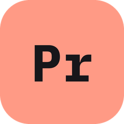
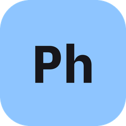
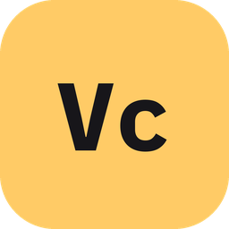
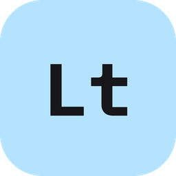
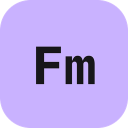
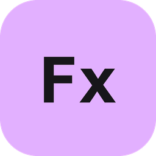
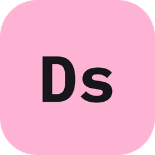
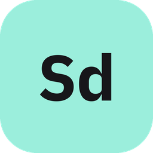
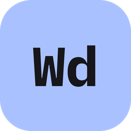
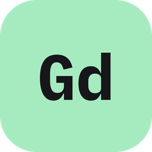
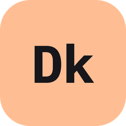
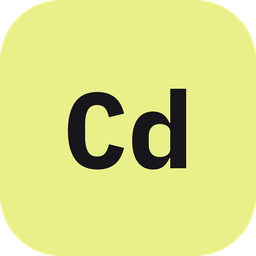
Usar nos sites
Cole no <head> e marque a frente no <html data-brand> (proddyt, labs ou studio).
<link rel="preconnect" href="https://fonts.googleapis.com">
<link rel="preconnect" href="https://fonts.gstatic.com" crossorigin>
<link href="https://fonts.googleapis.com/css2?family=IBM+Plex+Mono:wght@400;500;600;700&family=IBM+Plex+Sans:wght@400;500;600;700&display=swap" rel="stylesheet">
<link rel="stylesheet" href="https://cdn.jsdelivr.net/gh/Proddyt-Labs/brand@1/tokens.css">
<link rel="stylesheet" href="https://cdn.jsdelivr.net/gh/Proddyt-Labs/brand@1/base.css">
<script src="https://cdn.jsdelivr.net/gh/Proddyt-Labs/brand@1/theme.js"></script>